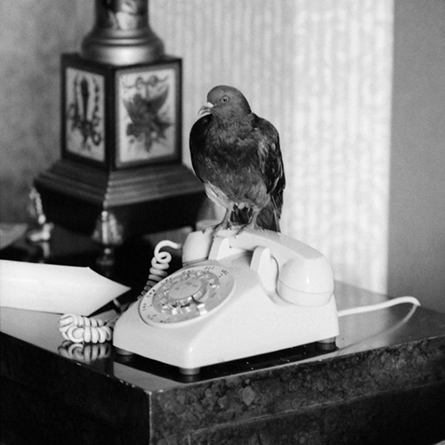
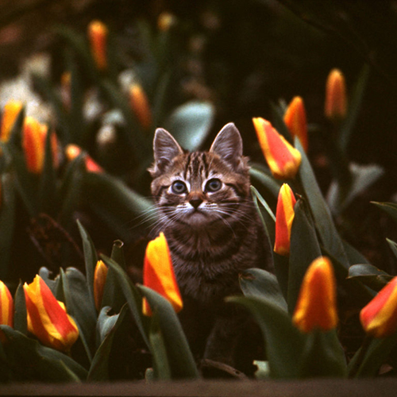
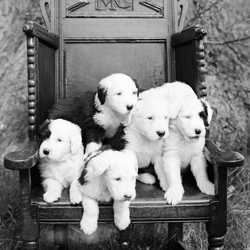
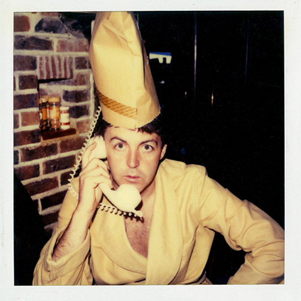
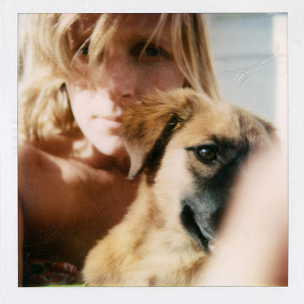
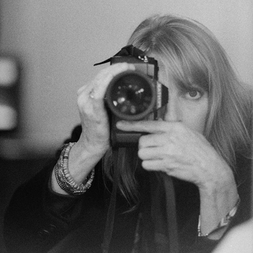
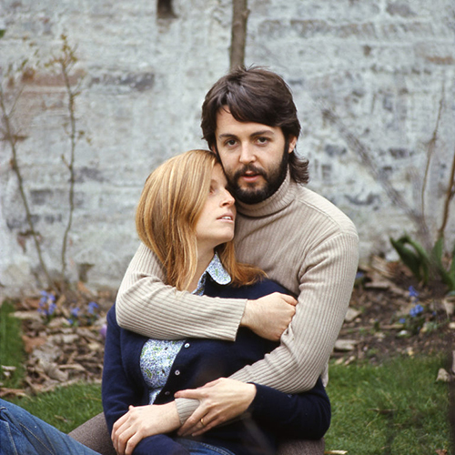
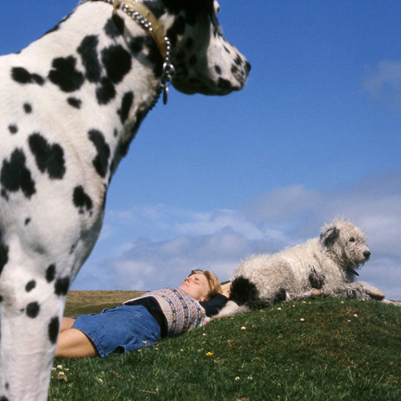

Animales
1968 - 1991

Paloma
Nueva Orleans, 1975.

Gato y tulipanes
Londres, 1968.

Viejos Ingleses Ovejeros Cachorros
Sussex, 1991.
Polaroids
1980s

Sussex, 1980s.

Montserrat, 1980s.

Sussex, 1980s.
Autorretratos
1968 - 1992

Auto - Retrato.
1992.

Paul y Linda
Londres, 1968.

Linda
Escocia, 1975.